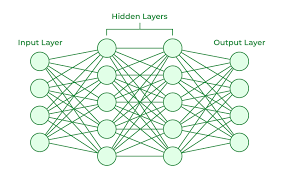

Artificial intelligence is no longer a distant idea.
What feels sudden today is the result of a journey that began more than seventy years ago.
Just over a decade ago, AI took a dramatic leap forward. What changed around 2012?
↓2012 changed everything.
Deep learning was the turning point — AI began learning patterns on its own.

But before 2012 and the deep learning revolution, how did AI systems work?
↓Before deep learning, AI depended on human logic.
Early AI could be powerful, but only within the boundaries humans defined.
To understand how far back this idea goes, we have to go even further — to the moment people first began asking whether machines could think at all.
↓The origin of AI begins with a question.
Long before modern models existed, Turing created the intellectual spark that started the field.
From one question in 1950, artificial intelligence evolved through decades of breakthroughs to become the systems we use today.
↓